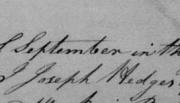

Last Will and Testament of Joseph Hedges of Maryland in 1732 (Transcript)
The Last Will and Testament of Joseph Hedges, who died in 1732 near Monocacy, Frederick, Maryland in the United States.
Also includes an abstract, which highlights the key dates, people, and property mentioned in this will.
Citation and Online Images
Last Will and Testament of Joseph Hedges, filed 29 Nov 1732, witnessed 6 Sep 1732; images 111-112, original pages 203-204, Wills 1698, Prince George's (https://familysearch.org/pal:/MM9.3.1/TH-1951-24235-7001-64?cc=1803986&wc=SNY4-FMS:146535401,147178401); from "Maryland, Register of Wills Records, 1629-1999" (https://familysearch.org/search/collection/1803986) [Free registration required to view these images.]
Abstract of Will
An overview of the main facts found in this will.
Timeline
- 6 September 1732: Will signed and witnessed (because Joseph is sick)
- 29 November 1732: Date of Record (Will entered into court record)
People and Property
The list below details the people mentioned in Joseph Hedges' will and the property or other bequest they receive.
- Joseph Hedges (testator, deceased): of Manaquincy [Monocacy, now in Frederick county], Prince Georges County, Maryland
- Solomon Hedges (son & executor)
- Real Estate: 258 acres (alongside?) the West side of Manaquicy Creek
- Charles Hedges (son & executor)
- Real Estate: 200 acres (at Opeckan), purchased by estate
- Joshua Hedges (son)
- Real Estate: 200 acres (at Opeckan), purchased by estate
- Jonas Hedges (son)
- Real Estate: [unclear] acres (at Opeckan), equal to Joseph Jr.'s, purchased by estate
- Joseph Hedges, Jr. (son):
- Real Estate: [unclear] acres (at Opeckan), equal to Jonas', purchased by estate
- Animals: dark bay mear and colt
- Samuel Hedges (son)
- Real Estate: 190 acres (at Manaquicy), purchased by estate
- Animals: brown mear and colt
- Ruth Hedges (daughter)
- Animals: Gray mair and colt
- Cathren Hedges (daughter)
- Animals: young brown mear
- Darcas Hedges (daughter)
- Animals: young sorrell mear
- Wife (name not given, implied still alive): remainder of estate after bequests, divided equally between wife and children.
- Chidly Matthews (witness)
- Thomas Hillard (witness)
- John Hillard (witness)
- Pet. Dent (Dty. Com[sy] of Pn. Geo. County)
Transcript of Will [Emphasis and paragraphs added]
[page 203]
In the name of God Amen, the sixth day of September in the year of our Lord one thousand seven hundred and thirty two I Joseph Hedges of Manaquincy [Monocacy, now in Frederick county] in Prince Georges County in Maryland being very sick and weak in body, but of perfect mind and memory thanks being unto God therefore calling unto mind the morality of my body and knowing that it is appointed for men once to die do make and ordaine this my last Will and testament that is to to say Principally and first of all I give and Recommend my Soul into the hands of God that gave it Hopeing through the Merits Death and Passion of my Saviour Jesus Christ to have full and free Pardon of all my Sins and to Inherit Everlasting life
And my Body I commit to the Earth to be Decently Buried at the Discretion of my Executor hereafter named nothing doubting but at the General Resurrection I shall receive the same again by the mighty power of God
And as touching such Worldly State wherewith it hath pleased God to [illegible] this Life, I give Demise and dispose of the same in the following Manner
First I Will that all those debts and duties as I do owe in Right and conscience to any manner or person or persons whatsoever shall be well and truely contented and paid or ordained to be paid in convenient time after my decease by my Executors hereafter named.
Then I give and bequeath to my well beloved son Solomon Hedges whom I constitute, make and ordain my Executor of this my last will and testament a certain tract of land computed to be 258 acres lying up Manaquicy Creek on the West Side of the said creek.
Item I give unto Charles Hedges and Joshua Hedges (my 2 sons) each of them two hundred acres of land at Opeckan to be clear'd and paid for out of my estate and effects.
[page 204]
My will is that my executors Solomon Hedges and Charles Hedges shall purchase [empty space] acres of land at Opecken which shall be equally divided between my two sons Jonas Hedges and Joseph.
My will is that my Executor above named do purchase one hundred and ninety acres of land at Manaquicy out of my estate and effects for my son Samuel Hedges.
Item I give unto my daughter Ruth my Gray mair and colt and to my daughter Cathren a young brown mear and to my daughter Darcas a young sorrell mear and to my son Joseph a dark bay mear and colt, I give to my son Samuel my brown mear and colt.
And my will is that what remains of my estate stock and effects with household goods and furniture be equally divided amongst my children and wife.
[Signatures]
Satisfying and confirming this and no other to be my last will and testament in witness whereof I have hereunto set my hand and sail the day and year above written.
Joseph "his mark" Hedges
Signed, sealed, published and declared by the [S.?] Joseph Hodges as his last will and testament in the presence of us
Chidly Matthews
Thomas "his mark" Hillard
John "his mark" Hillard
[Court filing]
On the back of this will was endorsed to wit Nov. the 29th, 1732
Then came Chidly Matthews and made oath on the holy evangelists of God that he saw and heard Joseph Hedges the dec'd testator sign seal publish and declair the written will to be his last will and testament and at the time of his so doing he was of sound and perfect memory to the best of his apprehension [phrase repeated] and in his presence and at his request he subscribed the same as evidence and he believes the the other subscribing evidence saw and heard the same as he did.
Sworn before Pet. Dent. Dty. Comry. of Pn. Geo. County.
The other subscribing evidences to this will are dangerously ill and cou'd not attend a [6 1/2 sides?]